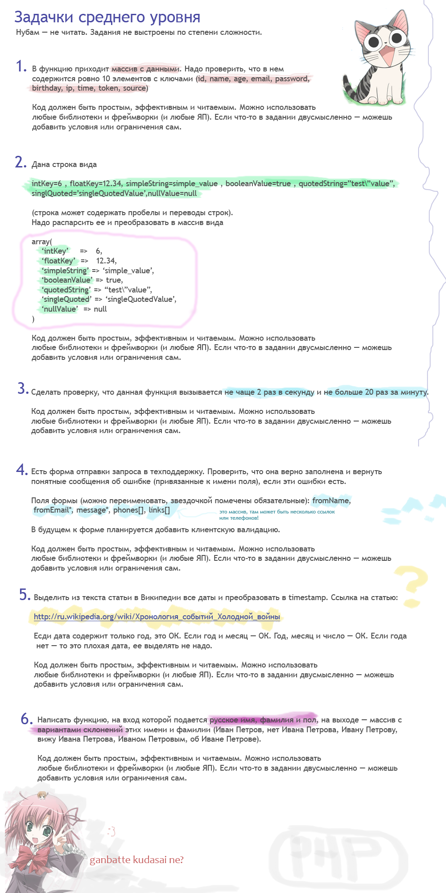
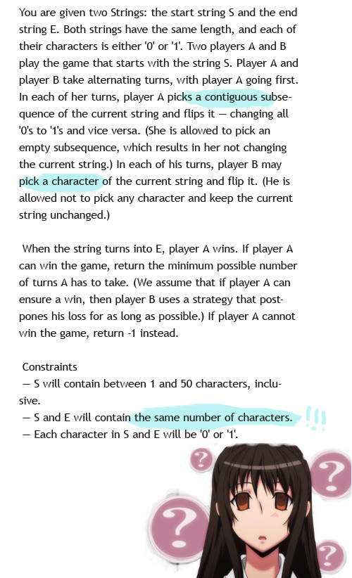

Няша, если ты не «чайник» и знаешь PHP, пожалуйста, не разводи флуды и холивор на тему какой язык-фреймворк лучше, и нужен ли ООП и MVC. Лучше реши задачки с пикрелейтед. Можешь на своем любимом ЯП.
Если ты хочешь рассказать, что строки в одиночных кавычках работают быстрее строк в двойных кавычках, а конкатенация быстрей интерполяции — уходи, тебе тут не рады а лучше реши задачи с пикрелейтед.
Также, есть пара неплохих задач с codeforces (на английском, но как в программировании без английского?): задача про скульптуры (попроще) и про последовательность чисел (посложнее)
Тем, кому и этого мало, так и быть — держите еще задачку (задачка взята с какой-то олимпиады):

-----
Куда вводить код? Что надо скачать? Читай первый урок.
Есть вопросы? Задай гуглу или автору.
Нравится урок? Лайкай, репости, приглашай друзей, пости котов и Канако, шли добра, решай задачи, помогай новичкам! Кнопок для лайка нет, кто хочет зарепостить, всегда может сделать это ручками.
Как связаться с автором? Я хочу переодеть его в платье школьницы и жениться на нем. Ящик codedokode (кот) gmail.com ждет ваших писем. А вконтактик и фейсбучек ждут ваших лайков. Но ответ на банальные вопросы лучше искать в Гугле или на stackoverflow.
Я решил задачку!!! Молодец, делай следующий урок
Ideone не работает!11 Ну так открой Гугл и найди сайты вроде https://repl.it/languages/php , http://phptester.net/ , http://sandbox.onlinephpfunctions.com/ , http://codepad.org/ или http://www.runphponline.com/ . Не ленись.
Почему так много рекламы? Всю рекламу на сайте ставит юкоз (бесплатный хостинг же), а не я.
На сайте установлена система Google Analytics (и еще несколько аналогичных систем от юкоза). Данные о твоем IP-адресе, посещаемых страницах, времени посещения отправляются в Google Corporation, США. Хочу знать, кто и зачем сюда заходит. Поверь, другие сайты делают точно так же. Все сайты пишут логи.